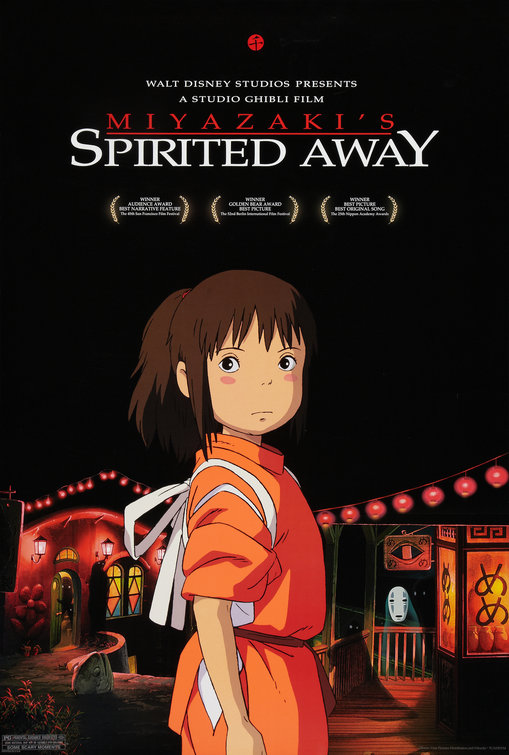
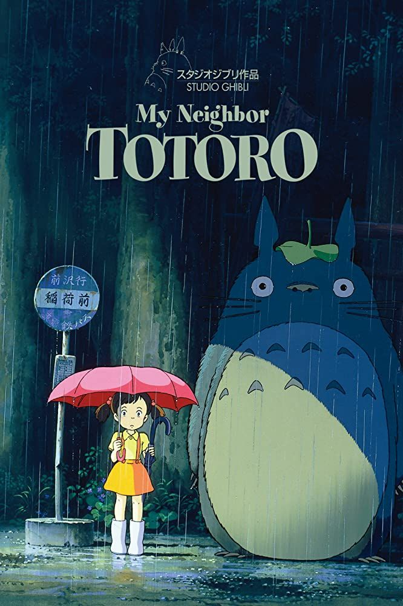

STUDIO GHIBLI
PARA FANÁTICOS
El mundo de
Hayao Miyazaki
y Studio Ghibli
My Neighbor Totoro
Calificando una obra de 1986, Por @minnie
CALIFICACIÓN:
4,5/5
OPINIÓN:
Clásico de Studio Ghibli recomendable para todas las edades. Aunque sea de hace ya bastante años, no caduca. Se hace amena y se pasa volando. La mayoría de gente con la que he hablado que han visto la peli hubiesen querido una segunda parte. Fantasía y realidad se entremezclan y nos explican la historia de dos hermanas que están pasando por momentos muy duros. 100% recomendable. (y ahora que está en Netflix, hay menos excusas para no verla!).
Spirited Away
Calificando una peli que tiene un Óscar, Por @holly
CALIFICACIÓN:
4,8/5
OPINIÓN:
Siempre fui muy distante al anime, pero luego de ver "El Viaje De Chihiro" y quede cautivado por lo maravillosamente entretenida y colorida que era, creo que me deje atrapar por este estilo de historias. La historia de una niña perdida en una tierra de fantasía que se dispone a salvar a sus padres mientras descubre secretos hace un trabajo excelente al equilibrar la inocencia infantil con la crudeza madura y los momentos aterradores, a la vez que homenajea obras similares como "Alicia En El País De Las Maravillas" (1951). Su animación me pareció inmejorable por estar cuidadosamente detallada, y aunque puede parecer demasiado infantil a veces, en verdad no deja de ser un anime digno del Óscar. De las mejores películas animadas que hay, sin duda.

Kiki's Delivery Service
Calificando lo primero que ví de Miyazaki sin saberlo, Por @oreo
CALIFICACIÓN:
4,5/5
OPINIÓN:
Desde niña amaba esta película, recuerdo que en mis tiempos la ponian a veces en el Discovery Kids y siempre la veia. Siempre le tendre en cariño enorme a esta y a todas las películas Ghibli, ademas que siempre agradeceré que Miyasaki junto a Isao Takahata hayan creado Studio Ghibli y unas peliíulas tan hermosas que siempre te llegaran al corazon.
Películas con mejor puntuación (Top 5)
-

Spirited Away (2001)
Calificación de la crítica:
5/5 -
Princess Mononoke (1997)
Calificación de la crítica:
4,4/5 -

My Neighbor Totoro (1988)
Calificación de la crítica:
4,3/5 -
Porco Rosso (1992)
Calificación de la crítica:
4,1/5 -
Pompoko (1994)
Calificación de la crítica:
4/5
¿Dónde ver las películas de Studio Ghibli?
Foros (Activos ahora)
-
Admin. @pelón
Temática: ¿Por qué Chihiro no fue hombre? -
Admin. @lobo_apapacho
Temática: Boro the Caterpillar, lo ultimo de Miyazaki
Busqueda por
Personajes Año Temática Calificación Banda Sonora Director Reconocimientos Presupuesto Género del protagonista
Únete a Ghibli Fans
¿Quieres dejar tu calificación en nuestro muro, opinar en los foros, enterarte sobre las actualizaciones en las plataformas de streaming o simplemente ser parte de esta comunidad?
¿Qué esperas?